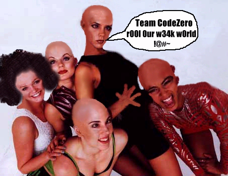

They can Try to take over the World , but they will never get past us! damn kids!.
...and here's a group picture of the Virgin Music Group systems admininstration team :

Hack the weak network. the UK and Russian hackers are the elite.

BWHAHEHAHAHAHAHEOAHAAHAHAHAHAHAHAHAHAEOHAHAAHHA!!!@#~@#
sp1cew0rld g0.. BOOM.
welcome to the beginning.. of the END.
wh0 laughs last you fools? the Spice Girls suck, but at least they suck the right things.They have no talent, and no idea, but that's OK, because they won't be around for much longer, considering the fact that they have no managment staff.
The novelty of the Spice Girls is definately wearing off, they should realise that they can't sing, and quit while they're ahead.
We are hackers, we rule this place you call your internet, we built the internet, and we can gain access to any system connected to this network, it's all so easy to us, we can break government systems, we can break the US defense information systems network, its all just 1's and 0's, nothing special, the thing I find funny is the fact that companies want you to give them money across the internet, using your personal details and your credit card information, this is also information that hackers can easily access, so I would stongly advise anyone thinking about electronic commerce over the internet to think again, because..
.
Security is futile, and you will be 0wned.
0wned (0wn`3d) : the art of showing how stupid a sysadmin can be, see sekurity.
brought to you by :
so1o of Team CodeZero for logins and concept,
BoMbJAcK And NightRage of A.W.O.L. - Bristol, for hardware and logistics.
shouts and greets to :
All the Russian and UK crew, and Team CodeZero.
anyone else :
Oh yeah, the Spice Girls, have one on me.. because yer 0wned.
They can Try to take over the World , but they will never get past us! damn kids!.
...and here's a group picture of the Virgin Music Group systems admininstration team :